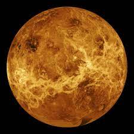

About Venus

Venus is a cloud-swaddled planet named for a love goddess, and often called Earth's twin. But pull up a bit closer, and Venus turns hellish. Our nearest planetary neighbor, the second planet from the Sun, has a surface hot enough to melt lead.